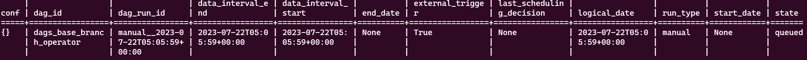
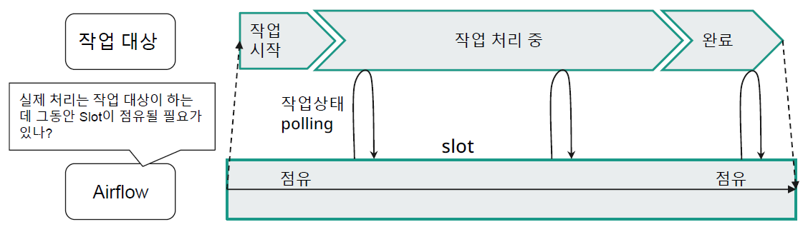
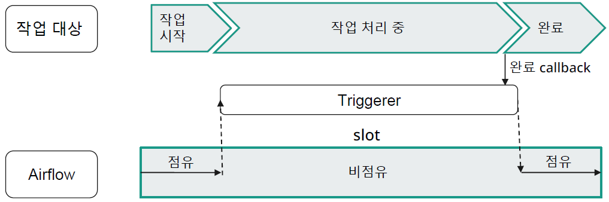

Airflow Additional Function
DAG Creation, Bash Operator, Task Performance Subject,
Engineering
template
- case 1
- 위의 경우를 Task_1 뿐만 아니라 DAG_B의 task_k 에도 선행 의존관계가 걸리도록 External Task 센서를 하나 달도록 개선
- case 2
- 위의 경우, Task_1이 완료되면 또 다른 dag 을 trigger 되고 싶은데 DAG A 를 수정해야할 경우
- TriggerDagRun 오퍼레이터와 ExternalTask 센서를 많이 사용하다보면 연결관리 에 많은 노력이 필요 (강한 연결)
- 큐시스템과 같이 Job 수행이 완료된 Task 는 Push 하고 센싱이 필요한 task 은 큐 시스템을 구독하는 방식을 쓴다면 ? (약한 연결)
- Produce / Consume 구조를 이용하여 Task 완료를 알리기 위해 특정 키 값으로 Produce 하고 해당 키를 Consume 하는 DAG 을 트리거 스케줄 할 수 있는 기능
- 실제 큐가 있는 것은 아니고 DB 에 Produce / Consume 내역을 기록
- Dataset 은 Pub/sub 구조로 DAG 간 의존관계를 주는 방법
- Unique 한 String 형태의 Key 값을 부여하여 Dataset Publish
- Dataset 을 Consume 하는 DAG 은 스케줄을 별도로 주지 않고 리스트 형태로 구독할 Dataset 요소들을 명시
- Dataset에 의해 시작된 DAG 의 Run_id 는 dataset_triggered__{trigger 된 시간 } 으로 표현됨
- Airflow 화면 메뉴 중 Datasets 메뉴를 통해 별도로 Dataset 현황 모니터링 가능
- N개의 Dataset 을 구독할 때 스케줄링 시점은 ?
- 마지막 수행 이후 N 개의 Dataset 이 모두 재 업데이트되는 시점

- 마지막 수행 이후 N 개의 Dataset 이 모두 재 업데이트되는 시점
- 목적: DAG 하위 모든 오퍼레이터에 공통 적용될 파라미터를 입력
- 어떤 파라미터들이 적용 가능할까?
- 오퍼레이터에 공통 적용할 수 있는 파라미터들
- BaseOperator 클래스 생성자가 가지고 있는 파라미터
- airflow doc
- Code
- DAG 파라미터는 DAG 단위로 적용될 파라미터
- 개별 오퍼레이터에 적용되지 않음
- DAG 파라미터는 default_args 에 전달하면 안됨
- Base 오퍼레이터 파라미터는 개별 Task 단위로 적용될 파라미터.
- Task 마다 선언해줄 수 있지만 DAG 하위 모든 오퍼레이터에 적용 필요시 default_args 를 통해 전달 가능
- default_args 에 전달된 파라미터보다 개별 오퍼레이터에 선언된 파라미터가 우선순위를 가짐
- airflow doc
- email 파라미터와 email_on_failure 파라미터를 이용
- email 파라미터만 입력하면 email_on_failure 파라미터는 True 로 자동설정됨
- Email 받을 대상이 1 명이면 string 형식으로 , 2 명 이상이면 list 로 전달
- 그런데 협업 환경에서 DAG 담당자는 수시로 바뀔 수 있고 인원도 수시로 바뀔 수 있는데 그때마다 DAG 을 뒤져서 email 리스트를 수정해야 할까 ?
- 이럴때 Variable 을 이용하자
개념: 오퍼레이터 수행시 정해놓은 시간을 초과하였는지를 판단할 수 있도록 설정해놓은 시간 값 파이썬의 timedelta 로 정의
동작: 설정해놓은 SLA 를 초과하여 오퍼레이터 running 시 SLA Miss 발생 , Airflow UI 화면에서 Miss 건만 조회 가능 + email 발송 가능
- SLA Miss 발생시 task 가 실패되는 것은 아니며 단순 Miss 대상에 기록만 DB에 남기게 됨
- SLA 는 DAG 파라미터가 아니며 BaseOperator 의 파라미터
-
def __init__( self, task_id: str, owner: str = DEFAULT_OWNER, email: str | Iterable[str] | None = None, email_on_retry: bool = conf.getboolean("email", "default_email_on_retry", fallback=True), email_on_failure: bool = conf.getboolean("email", "default_email_on_failure", fallback=True), retries: int | None = DEFAULT_RETRIES, retry_delay: timedelta | float = DEFAULT_RETRY_DELAY, retry_exponential_backoff: bool = False, max_retry_delay: timedelta | float | None = None, start_date: datetime | None = None, end_date: datetime | None = None, depends_on_past: bool = False, ignore_first_depends_on_past: bool = DEFAULT_IGNORE_FIRST_DEPENDS_ON_PAST, wait_for_past_depends_before_skipping: bool = DEFAULT_WAIT_FOR_PAST_DEPENDS_BEFORE_SKIPPING, wait_for_downstream: bool = False, dag: DAG | None = None, params: collections.abc.MutableMapping | None = None, default_args: dict | None = None, priority_weight: int = DEFAULT_PRIORITY_WEIGHT, weight_rule: str = DEFAULT_WEIGHT_RULE, queue: str = DEFAULT_QUEUE, pool: str | None = None, pool_slots: int = DEFAULT_POOL_SLOTS, sla: timedelta | None = None, # sla 변수 execution_timeout: timedelta | None = DEFAULT_TASK_EXECUTION_TIMEOUT, on_execute_callback: None | TaskStateChangeCallback | list[TaskStateChangeCallback] = None, on_failure_callback: None | TaskStateChangeCallback | list[TaskStateChangeCallback] = None, on_success_callback: None | TaskStateChangeCallback | list[TaskStateChangeCallback] = None, on_retry_callback: None | TaskStateChangeCallback | list[TaskStateChangeCallback] = None, pre_execute: TaskPreExecuteHook | None = None, post_execute: TaskPostExecuteHook | None = None, trigger_rule: str = DEFAULT_TRIGGER_RULE, resources: dict[str, Any] | None = None, run_as_user: str | None = None, task_concurrency: int | None = None, max_active_tis_per_dag: int | None = None, max_active_tis_per_dagrun: int | None = None, executor_config: dict | None = None, do_xcom_push: bool = True, inlets: Any | None = None, outlets: Any | None = None, task_group: TaskGroup | None = None, doc: str | None = None, doc_md: str | None = None, doc_json: str | None = None, doc_yaml: str | None = None, doc_rst: str | None = None, **kwargs, ):- sla: timedelta | None = None, # sla 변수
- timedelta보다 오랜 시간동안 task가 더 오래 수행되면 SLA Miss 기록만 남기고 실패처리는 안하게 됨
- default_arg에 넣을 수 있기 때문에 모든 task, 즉 모든 operator에 공통 적용할 수 있다.
- sla: timedelta | None = None, # sla 변수
sla_miss_callback: DAG에 있는 SLA 관련 파라미터로 SLA Miss시 수행할 함수 지정 가능-Source code for airflow.models.dag
- sla_miss_callback 파라미터
- sla miss시 수행할 함수명을 입력 받음
- dag에 있는 파라미터이기 때문에 default_arg에 넣을 수 없음
- DAG의 파라미터임 (BaseOperator 의 파라미터가 아니라는 것에 유의)
- sla_miss_callback 파라미터
- 1번째 제약사항: 각 Task 의 SLA timeout 카운트 시작은 DAG 의 시작시간 기준임
- 처음 사용하는 사용자들은 다음과 같이 생각할 수 있다.
- task1은 task1의 sla구간보다 수행시간이 짧게 완료됐기 때문에 성공 처리
- task2는 sla 구간보다 더 길기 때문에 miss 처리됨
- task3는 sla 구간보다 짧기 때문에 성공 처리
- airflow는 위와 같이 동작하지 않음 옆의 그림과 같이 동작함
- 실제 airflow에서는 수행 시간을 dag의 최초 실행시점 부터 카운트 하기 시작함
- task1의 수행완료 상태 및 시점과 상관없이 task2와 task3의 수행 시간은 task1 수행 시점 부터 카운트 되기 시작한다.
- 그러므로 task2, task3는 수행된적이 없음에도 miss sla 상태로 처리됨
- 2번째 제약사항: DAG의 시작시간 기준 \(\rightarrow\) 명목적인 시작 시간 (data_interval_start)
- 위의 SLA timeout 카운트 시작은 dag의 시작시간 기준이라는 제약 사항과 연결되는 제약사항
- 만약 Pool 이 부족하거나 스케줄러의 부하로 인해 DAG 이 스케줄보다 늦게 시작했다면 늦게 시작한만큼 이미 SLA 시간 카운트는 진행되어 시간이 소요되고 있음
- 실질적 DAG 시작 시간을 기준으로 카운트하지 않음
- 즉, 특정 task 수행에 computing 부하가 걸리면 후차적인 task들은 모두 miss 처리됨
- 대규모 프로젝트에서 흔히 발생하는 문제로 dag이 밀리는 현상이 자주 관찰되므로 sla는 자주쓰이는 방식은 아님.
- 3번째 제약사항: 첫 스케줄에서는 SLA Miss 가 기록되지 않음 (두 번째 스케줄부터 기록)
- 4번째 제약사항: sla miss처리가 분명히 발생됐는데 가끔 기록이 안될때가 있고 email역시 발송이 되지 않을때가 있음. 엄격이 관리가 되지 않는 기능
- 위 코드를 보면,
- 1번째 task는 30초 sleep이 70초 sla timedelta보다 짧기 때문에 성공 처리
- 2번째 task는 30,40초 돌다가 miss 처리됨
- 3,4 번째 task는 수행되기도 전에 miss처리됨
- 4번째 timedelta가장 짧기 때문에 가장 먼저 miss 처리 됨
- Airflow web service에서 SLA Miss 현황 조회하기
- airflow web service >> browse
- Task수준의 timeout 과 DAG 수준의 timeout 이 존재
- execution_timeout: Task수준의 timeout 파라미터: baseOperator 명세에서 init 생성자에서 sla 파라미터 아래에 있음
- execution_timeout: timedelta | None = DEFAULT_TASK_EXECUTION_TIMEOUT,
- timedelta보다 오래 task가 수행됐을 때 task는 fail 처리됨
- task가 fialure 됐을 때 init 생성자 안의 다른 파라미터인
email_on_failure: bool = conf.getboolean("email", "default_email_on_failure", fallback=True)과email: str | Iterable[str] | None = None,에 의해 지정 대상에게 email을 보낼 수 있다. - 요약하면, timedelta, email_on_failure, email 이렇게 3개의 파라미터를 이용하여 timedelta 를 초과하는 task 수행시 fail 처리를 하여 이메일을 보낼 수 있다.
- dagrun_timeout: DAG수준에서도 timeout 파라미터를 걸 수 도 있음 : dagrun_timeout
- [docs]class DAG(LoggingMixin): 의 init 생성자
def __init__( self, dag_id: str, description: str | None = None, schedule: ScheduleArg = NOTSET, schedule_interval: ScheduleIntervalArg = NOTSET, timetable: Timetable | None = None, start_date: datetime | None = None, end_date: datetime | None = None, full_filepath: str | None = None, template_searchpath: str | Iterable[str] | None = None, template_undefined: type[jinja2.StrictUndefined] = jinja2.StrictUndefined, user_defined_macros: dict | None = None, user_defined_filters: dict | None = None, default_args: dict | None = None, concurrency: int | None = None, max_active_tasks: int = airflow_conf.getint("core", "max_active_tasks_per_dag"), max_active_runs: int = airflow_conf.getint("core", "max_active_runs_per_dag"), dagrun_timeout: timedelta | None = None, sla_miss_callback: None | SLAMissCallback | list[SLAMissCallback] = None, default_view: str = airflow_conf.get_mandatory_value("webserver", "dag_default_view").lower(), orientation: str = airflow_conf.get_mandatory_value("webserver", "dag_orientation"), catchup: bool = airflow_conf.getboolean("scheduler", "catchup_by_default"), on_success_callback: None | DagStateChangeCallback | list[DagStateChangeCallback] = None, on_failure_callback: None | DagStateChangeCallback | list[DagStateChangeCallback] = None, doc_md: str | None = None, params: collections.abc.MutableMapping | None = None, access_control: dict | None = None, is_paused_upon_creation: bool | None = None, jinja_environment_kwargs: dict | None = None, render_template_as_native_obj: bool = False, tags: list[str] | None = None, owner_links: dict[str, str] | None = None, auto_register: bool = True, ):- 다음 파라미터를 이용하여 dag을 관리할 수 있다.
- schedule: ScheduleArg = NOTSET,
- start_date: datetime | None = None,
- default_args: dict | None = None,
- dagrun_timeout: timedelta | None = None,
- task1 >> task2 >> task3 예시
- dag은 timeout이 안됐지만 task가 timeout이 되는 case
- task2의 실행시간이 task2의 execution_timeout보다 길게 수행되어 fail되었고 task3은 task2로 인해 upstream failed 이 발생
- 하지만, task1,2,3 의 수행시간의 총합이 dagrun_timeout 보다 짧기 때문에 dag 자체는 실패처리 안됨
- task는 성공 처리 됐지만 dag이 오랜시간동안 돌아 timeout되어 실패처리되는 case
- 각 task들이 execution_timeout보다 짧아 모두 정상 처리 되었지만 task1,2,3의 총 실행시간이 dagrun_timeout보다 길어 dag자체는 failure이 된 상황
- dag이 failure되는 시점에서의 task는 skipped 상태로 처리된다.
- case1: tasks는 실패, dargrun 정상
- case2: tasks는 정상, dargrun 실패
- dagrun_timeout의 한계점
- 모든 task들이 40초안에 실행완료가 되기때문에 성공 처리됨
- dagrun은 1분으로 설정됐기 때문에 2번째 task 가 실행될 때 dag이 fail되고
- 2번째task는 skipped 처리가 됨, 이 task에 대해서는 email도 안감
- 3번째 task는 no status 처리됨 , 이 task에 대해서는 email도 안감
- sla, execution_timeout에는 email 발송 paraemeter가 있지만 execution_timeout에는 없다.
- dagrun timeout이 fail 됐을 때 반드시 email 발송 하고싶으면 dag의 파라미터 중 on_failure_callback 에 dag이 실패됐을 때 이메일을 전송하는 함수를 만들어 그 함수명을 할당해준다.
- upstream_failed 상태는 execution_timeout만이 갖는 특징이 아니라 airflow의 디폴트 설정이다. 상위 task들이 fail되면 후행 task들은 upstream_failed로 남는다.
- 공통점: 파이썬의 timedelta 함수로 timeout 기준 시간 정의
- Airflow가 설치되어 있는 서버 또는 환경에서 shell 명령을 이용하여 Airflow를 컨트롤 할 수 있도록 많은 기능들을 제공하고 있음
- airflow cli doc
- 대표적인 content
- dags: dag을 다룰 수 잇는 커맨드
airflow dags [-h] COMMAND ...- backfill: airflow web ui 의 grid 기능을 보면 dag이 돌았던 이력을 볼 수 있는데 grid 상 가장 과거 날짜 뿐만 아니라 그 이전의 과거 날짜 또한 command의 옵션으로 모두 돌릴 수 있음
airflow dags backfill [-h] [-c CONF] [--continue-on-failures] [--delay-on-limit DELAY_ON_LIMIT] [--disable-retry] [-x] [-n] [-e END_DATE] [-i] [-I] [-l] [-m] [--pool POOL] [--rerun-failed-tasks] [--reset-dagruns] [-B] [-s START_DATE] [-S SUBDIR] [-t TASK_REGEX] [--treat-dag-as-regex] [-v] [-y] dag_id- delete: Delete all DB records related to the specified DAG
airflow dags delete [-h] [-v] [-y] dag_id- details: Get DAG details given a DAG id
airflow dags details [-h] [-o table, json, yaml, plain] [-v] dag_id * list: List all the DAGs ```markdown airflow dags list [-h] [-o table, json, yaml, plain] [-S SUBDIR] [-v] - variables: variables을 관리하는 command
airflow variables [-h] COMMAND ...- delete:
airflow variables delete [-h] [-v] key- 등록되있는 variables을 key값을 입력하여 삭제
- export:
airflow variables export [-h] [-v] file- 등록되있는 variables을 json file로 추출
- get:
airflow variables get [-h] [-d VAL] [-j] [-v] key- 특정 variables의 key값을 주어 values을 꺼내옴
- import:
airflow variables import [-h] [-v] file- json file에 variables을 작성해놓고 list를 한번에 입력한다.
- list:
airflow variables list [-h] [-o table, json, yaml, plain] [-v] - set:
airflow variables set [-h] [-j] [-v] key VALUE
- dags: dag을 다룰 수 잇는 커맨드
- 대표적인 content
- Cli를 잘 쓰면 좋은 이유
- 일괄작업: Airflow UI에서 할 수 없는 일괄 작업 방식을 제공
- ex: connection 일괄 등록. 만약 airflow ui로 등록하면 일일히 등록해야한다.
- 물론 CLI를 이용하는 방법 외에 metaDB table에 직접 insert하는 방법도 있음
- 특수기능: Airflow UI에서는 할 수 없는 기능을 제공
- ex: backfill 은 airflow ui 를 통해서는 실행 불가
- 자동화: Airflow UI에서 직접 눈으로 보고 클릭하는 방식이 아닌 프로그래밍에 의한 제어가 가능해짐
- CLI 커맨드는 shell 명령어로 이루저있기 때문에 shell script를 작성하여 자동화 할 수 있다.
- 일괄작업: Airflow UI에서 할 수 없는 일괄 작업 방식을 제공
dag trigger: airflow ui 상에서 manual 로 dag trigger 하거나 run_id 를 직접 넣어 trigger 할 수 있는 기능으로 CLI로 실행시킬 수 있다.
CLI 명령은 WSL2에서 하는게 아니라 docker container안에서 해야함
airflow dags trigger [-h] [-c CONF] [-e EXEC_DATE] [--no-replace-microseconds] [-o table, json, yaml, plain] [-r RUN_ID] [-S SUBDIR] [-v] dag_id- EXEC_DATE: execution_date parameter는 모두 data_interval_start 기준이며 String 형식으로 입력하면 기본 UTC로 계산됨
- RUN_ID를 입력하면 기본적으로 manual__로 시작하며 run_id를 직접 입력도 가능
- 예시:
#> airflow dags trigger dags_seoul_api_corona
Full Example
- dag_run_id: manual__2023-07-22T05:05:59+00:00.
- run type: manual__
- ClI 로 돌렸기 때문에 manual_이 붙어있음
- run types: schedule, manual, backfill 등이 있음
- 입력 스케줄 구간에 대해 일괄 (재)실행 (스케줄 이력이 없는 과거 날짜도 가능)
- 위의 예시에서, -s 2023-04-19 -e 2023-04-21 옵션이 있고 grid에서 task 수행 이력의 가장 최근 날짜가 2023-04-21 이라고 가정해보자.
- run_id가 scheduled__2023-04-21T22:00:00+00:00 일때
- 위의 날짜 구간 옵션에 있고 dag이 실행되지 않았던 04/20 22:00, 04/19 22:00 2개가 돌아가게 됨
- Clear 작업을 start / end 구간으로 일괄 재실행
- backfill의 경우 task가 수행이 됐건 안됐건 무조건 실행 (무조건 재실행)
- 하지만 clear 이미 실행됐던 task에 한해서 재실행됨
- Backfill과 달리 수행되지 않은 스케줄 구간은 실행할 수 없음
airflow tasks clear [-h] [-R] [-d] [-e END_DATE] [-X] [-x] [-f] [-r] [-s START_DATE] [-S SUBDIR] [-t TASK_REGEX] [-u] [-v] [-y] dag_idairflow tasks clear -s 2023-05-07 -e 2023-05-12 dags_seoul_api_corona airflow tasks clear -s 2023-05-07T22:00:00+00:00 -e 2023-05-12T22:00:00+00:00 dags_seoul_api_corona - Backfill되었던 DAG은 clear 불가함. reset-dagruns 옵션과 함께 다시 Backfill 수행해야 함
- 공통점: CLI 명령으로 DAG 실행 가능
- Airflow는 그 자체로 ETL 툴이라기보다 오케스트레이션 솔루션
- 왜냐면 airflow와 연계되는 외부 솔루션에 작업 제출, 상태 확인, 완료 확인 등의 절차를 통해 관리
- 예를 들어 airflow의 worker container가 python logic을 직접 처리하는게 아니라 python logic 을 python이 처리하도록 명령을 제출하고 로직 확인 및 결과 확인을 수행한다.
- bigquerty: google에 있는 data 저장소 서비스
- 외부 솔루션에 작업이 제출되어 완료될 때까지 Airflow의 Slot은 점유됨
- 워커를 대신하여 작업 상태 완료를 수신하고, 그때까지 Slot을 비워둘 수 있도록 해주는 Airflow의 서비스
- airflow service: 스케줄러, 워커 같은 요소 중 하나
- Python의 비동기 작업 라이브러리인 asyncio를 이용하여 작업상태 수신
- 사용 조건: Airflow 2.2 부터 & Python 3.7부터 사용 가능
- 어떻게 사용하나?
- Deferrable Operator 이용하여 Task 생성
- 기본 Operator 중에서는 아래의 Sensor 종류만 사용 가능
- TimeSensorAsync
- DateTimeSensorAsync
- TimeDeltaSensorAsync
- 끝에 Async 가 붙은 오퍼레이터를 Deferrable Operator라 부르며 Triggerer에게 작업 완료 수신을 맡기는 오퍼레이터라는 의미
- dags/dags_time_sensor.py (함수를 그냥 짬)
- dags/dags_time_sensor_with_async.py (asyncio library 이용)
- dag_time_sensor.py
- dags_time_sensor_with_async.py
- airflow ui>> browse >> triggers 에서 trigger가 작업하는 대상 목록을 보여줌
- trigger는 triggerer에게 작업을 맡길 event 또는 ticket이라고 생각하면 됨
- triggerer id는 ticket id
- defered status 는 보라색을 띄고 이 상태에서는 worker slot을 차지 않는 상태이다.
- 끝에 Async가 붙은 오퍼레이터는 Deferrable Operator 라 부르며 Triggerer에 의해 Polling이 수행되는 오퍼레이터임을 의미
- Deferrable Operator는 작업 제출 후 Slot을 차지하지 않으며 Polling 내역에 대해 Trigger 제출 후 deferred 상태가 됨.
- Triggerer는 제출된 Trigger 내역을 보고 작업 완료시(조건 만족시) Worker에게 알려줘 작업이 마무리될 수 있도록 함.
몰라도 되지만 알면 좋은 고급 기능들
1 Dataset을 이용한 Dag 트리거
1.1 Dataset의 필요성
1.2 정리
2 DAG의 default_args 파라미터
2.1 DAG 의 default_args 파라미터
from airflow import DAG
from airflow.operators.bash import BashOperator
from datetime import timedelta
import pendulum
from airflow.models import Variable
email_str = Variable.get("email_target")
email_lst = [email.strip() for email in email_str.split(',')]
with DAG(
dag_id='dags_sla_email_example',
start_date=pendulum.datetime(2023, 5, 1, tz='Asia/Seoul'),
schedule='*/10 * * * *',
catchup=False,
) as dag:
task_1 = BashOperator(
task_id='task_1',
bash_command='sleep 10m',
sla: timedelta(seconds=70), #SLA 설정
email: 'sdf@sdfsfd.com'
)
task_2 = BashOperator(
task_id='task_2',
bash_command='sleep 2m',
sla: timedelta(seconds=70), #SLA 설정
email: 'sdf@sdfsfd.com'
)
task_1 >> task_2from airflow import DAG
from airflow.operators.bash import BashOperator
from datetime import timedelta
import pendulum
from airflow.models import Variable
email_str = Variable.get("email_target")
email_lst = [email.strip() for email in email_str.split(',')]
with DAG(
dag_id='dags_sla_email_example',
start_date=pendulum.datetime(2023, 5, 1, tz='Asia/Seoul'),
schedule='*/10 * * * *',
catchup=False,
default_args={
'sla': timedelta(seconds=70),
'email': 'sdf@sdfsfd.com'
}
) as dag:
task_1 = BashOperator(
task_id='task_1',
bash_command='sleep 10m'
)
task_2 = BashOperator(
task_id='task_2',
bash_command='sleep 2m'
)
task_1 >> task_22.2 BaseOperator 파라미터 vs Dag 파라미터
2.2.1 DAG Parameter
2.2.2 BaseOperator Parameter
from airflow import DAG
from airflow.operators.bash import BashOperator
from datetime import timedelta
import pendulum
from airflow.models import Variable
email_str = Variable.get("email_target")
email_lst = [email.strip() for email in email_str.split(',')]
with DAG(
dag_id='dags_sla_email_example',
start_date=pendulum.datetime(2023, 5, 1, tz='Asia/Seoul'),
schedule='*/10 * * * *',
catchup=False,
default_args={
'sla': timedelta(seconds=70),
'email': 'sdf@sdfsfd.com'
}
) as dag:
task_1 = BashOperator(
task_id='task_1',
bash_command='sleep 10m'
)
task_2 = BashOperator(
task_id='task_2',
bash_command='sleep 2m',
sla=timedelta(minutes=1)
)
task_1 >> task_23 Task 실패시 Email 발송하기
3.1 Email 발송 위한 파라미터 확인
3.2 Email 발송 대상 등록
from airflow import DAG
from airflow.operators.bash import BashOperator
from airflow.decorators import task
from airflow.exceptions import AirflowException
import pendulum
from datetime import timedelta
from airflow.models import Variable
email_str = Variable.get("email_target")
email_lst = [email.strip() for email in email_str.split(',')]
with DAG(
dag_id='dags_email_on_failure',
start_date=pendulum.datetime(2023,5,1, tz='Asia/Seoul'),
catchup=False,
schedule='0 1 * * *',
dagrun_timeout=timedelta(minutes=2),
default_args={
'email_on_failure': True,
'email': email_lst
}
) as dag:
@task(task_id='python_fail')
def python_task_func():
raise AirflowException('에러 발생')
python_task_func()
bash_fail = BashOperator(
task_id='bash_fail',
bash_command='exit 1',
)
bash_success = BashOperator(
task_id='bash_success',
bash_command='exit 0',
)4 SLA로 task 수행 감시 & Email 발송하기
4.1 SLA파라미터 이해
4.2 SLA 제약사항
4.2.1 사람이 생각하는 SLA timeout 카운트 방식

4.2.2 실제 Airflow 의 SLA timeout 카운트 방식

4.3 Full Dag Example
from airflow import DAG
from airflow.operators.bash import BashOperator
from datetime import timedelta
import pendulum
from airflow.models import Variable
email_str = Variable.get("email_target")
email_lst = [email.strip() for email in email_str.split(',')]
with DAG(
dag_id='dags_sla_email_example',
start_date=pendulum.datetime(2023, 5, 1, tz='Asia/Seoul'),
schedule='*/10 * * * *',
catchup=False,
default_args={
'sla': timedelta(seconds=70),
'email': email_lst
}
) as dag:
# 30초 sleep
task_slp_30s_sla_70s = BashOperator(
task_id='task_slp_30s_sla_70s',
bash_command='sleep 30'
)
# 60초 sleep
task_slp_60_sla_70s = BashOperator(
task_id='task_slp_60_sla_70s',
bash_command='sleep 60'
)
# 10초 sleep
task_slp_10s_sla_70s = BashOperator(
task_id='task_slp_10s_sla_70s',
bash_command='sleep 10'
)
# 10초 sleep
# sla의 timedelta를 명시적으로 30초 선언
# default argument보다 명시적 선언이 우선 순위가 더 높음
# 그래서, 처음 3개의 task는 timedelta가 70초로 설정됐고 4번째 task는 30초로 설정됨
task_slp_10s_sla_30s = BashOperator(
task_id='task_slp_10s_sla_30s',
bash_command='sleep 10',
sla=timedelta(seconds=30)
)
task_slp_30s_sla_70s >> task_slp_60_sla_70s >> task_slp_10s_sla_70s >> task_slp_10s_sla_30s4.4 SLA Miss 시 email 발송하기
from airflow import DAG
from airflow.operators.bash import BashOperator
from datetime import timedelta
import pendulum
from airflow.models import Variable
email_str = Variable.get("email_target")
email_lst = [email.strip() for email in email_str.split(',')]
with DAG(
dag_id='dags_sla_email_example',
start_date=pendulum.datetime(2023, 5, 1, tz='Asia/Seoul'),
schedule='*/10 * * * *',
catchup=False,
default_args={
'sla': timedelta(seconds=70),
'email': email_lst
}
) as dag:
task_slp_30s_sla_70s = BashOperator(
task_id='task_slp_30s_sla_70s',
bash_command='sleep 30'
)
task_slp_60_sla_70s = BashOperator(
task_id='task_slp_60_sla_70s',
bash_command='sleep 60'
)
task_slp_10s_sla_70s = BashOperator(
task_id='task_slp_10s_sla_70s',
bash_command='sleep 10'
)
task_slp_10s_sla_30s = BashOperator(
task_id='task_slp_10s_sla_30s',
bash_command='sleep 10',
sla=timedelta(seconds=30)
)
task_slp_30s_sla_70s >> task_slp_60_sla_70s >> task_slp_10s_sla_70s >> task_slp_10s_sla_30s5 timeout 설정하기
5.1 Timeout 파라미터 이해
5.1.1 execution_timeout

5.1.2 datgrun_timeout

5.2 Dag Full Example
# Package Import
from airflow import DAG
from airflow.operators.bash import BashOperator
import pendulum
from datetime import timedelta
from airflow.models import Variable
# email 수신자 리스트
email_str = Variable.get("email_target")
email_lst = [email.strip() for email in email_str.split(',')]
with DAG(
dag_id='dags_timeout_example_1',
start_date=pendulum.datetime(2023, 5, 1, tz='Asia/Seoul'),
catchup=False,
schedule=None,
dagrun_timeout=timedelta(minutes=1),
default_args={
#각 task들이 20초안에 끝나야 성공 처리됨
'execution_timeout': timedelta(seconds=20),
'email_on_failure': True,
'email': email_lst
}
) as dag:
# execution_timeout보다 길기 때문에 task는 실패 처리됨
bash_sleep_30 = BashOperator(
task_id='bash_sleep_30',
bash_command='sleep 30',
)
# execution_timeout보다 짧기 때문에 task는 성공 처리됨
bash_sleep_10 = BashOperator(
trigger_rule='all_done', # upstream fail에도 task 실행시키기 위해 triggering
task_id='bash_sleep_10',
bash_command='sleep 10',
)
# upstream failure 발생해도 trigger_rule을 all_done을 줬기 때문에 bash_sleep_10 은 실행됨
# dagrun_timeout을 1분으로 설정했기 때문에 task run의 총합이 40초이기 때문에 dagrun은 정상 처리됨
bash_sleep_30 >> bash_sleep_10
from airflow import DAG
from airflow.operators.bash import BashOperator
import pendulum
from datetime import timedelta
from airflow.models import Variable
email_str = Variable.get("email_target")
email_lst = [email.strip() for email in email_str.split(',')]
with DAG(
dag_id='dags_timeout_example_2',
start_date=pendulum.datetime(2023, 5, 1, tz='Asia/Seoul'),
catchup=False,
schedule=None,
dagrun_timeout=timedelta(minutes=1),
default_args={
'execution_timeout': timedelta(seconds=40),
'email_on_failure': True,
'email': email_lst
}
) as dag:
bash_sleep_35 = BashOperator(
task_id='bash_sleep_35',
bash_command='sleep 35',
)
bash_sleep_36 = BashOperator(
trigger_rule='all_done',
task_id='bash_sleep_36',
bash_command='sleep 36',
)
bash_go = BashOperator(
task_id='bash_go',
bash_command='exit 0',
)
# 모든 task들이 40초안에 실행완료가 되기때문에 성공 처리됨
# dagrun은 1분으로 설정됐기 때문에 2번째 task 가 실행될 때 dag이 fail되고
# 2번째task는 skipped 처리가 됨, 이 task에 대해서는 email도 안감
# 3번째 task는 no status 처리됨 , 이 task에 대해서는 email도 안감
bash_sleep_35 >> bash_sleep_36 >> bash_go
5.3 정리
| Comparision | sla | execution_timeout | dagrun_timeout |
|---|---|---|---|
| 파라미터 정의 위치 | BaseOperator | BaseOperator | DAG |
| 적용 수준 | Task | task | DAG |
| 기능 | 지정한 시간 초과시 Miss 기록 | 지정한 시간 초과시 task fail 처리 | 지정한 시간 초과시 DAG fail 처리 |
| email 발송 가능 여부 | O | O | X |
| timeout 발생시 후행 task 상태 | 상관없이 지속 | Upstream_failed | Skipped (current) /No status (not run) |
| 스케쥴 필요 | O | X | X |
6 Airflow CLI 사용하기
6.1 cli - dag trigger
# docker container list 확인
sudo docker ps
# webserver container 선택 (어떤 것을 골라도 상관없음)
# airflow container 들어가기: sudo docker exec -it [docker_container_id] bash
sudo docker exec -it 8b755cb5aa70 bash
# trigger 명령어 실행
airflow dags trigger dags_base_branch_operator
6.2 결과

6.3 cli - dag backfill
# start (-s), end(-ㄷ) 파라미터를 dashed string 형태로 입력하면 UTC로 간주(아래의 start 날짜에 시간:분:초가 나와있지 않지만 날짜뒤에 00:00:00 가 붙음)
airflow dags backfill -s 2023-04-19 -e 2023-04-21 dags_seoul_api_corona
# 타임스탬프 형태로 직접 작성도 가능 (run_id에서 해당하는 날짜 구간을 찾아 실행)
airflow dags backfill -s 2023-04-19T22:00:00+00:00 -e 2023-04-20T22:00:00+00:00 —reset-dagruns dags_seoul_api_corona6.4 cli - task clear
6.5 정리
| Comparision | trigger | backfill | clear |
|---|---|---|---|
| 목적 | 특정 날짜로 DAG Trigger | Start ~ end 구간의 스케줄 실행 | Start ~ end 구간 내 이미 수 |
| 행되었던 스케줄 재실행 | |||
| Run type | -r 옵션으로 지정 가능. 없으면 Manual | Backfill | 원래의 run_type |
| 기 수행된 run_id가 존재하는 경우 | 동일 run_id 가 존재하는 경우 에러 발생 | Run_type 을 Backfill 로 덮어쓰며 | |
| 재실행 | 재실행 | ||
| 구간 지정 | 불가 | 가능 | 가능 |
| 과거 날짜 적용 가능 | 가능 | 가능 | 불가 |
| task 선택 가능 | 불가 | 가능 | 가능 |
7 Triggerer
Scheduler, worker, webserver, triggerer containers 중 하나
7.1 Airflow Triggerer의 필요성
 * airflow 의 task가 들어왔을 때 task는 airflow worker의 slot을 차지하게 됨 * 후에, 작업 대상에 작업을 제출하고 작업이 시작된다 * 작업대상: python function 또는 postgres, HDFS, Spark와 같은 외부 솔루션 * 작업이 진행되면 airflow는 작업이 완료 되었는지 작업상태를 polling 하면서 지속적으로 체크 * 작업 처리가 진행되는 동안 task는 차지했던 worker의 slot을 게속해서 차지한다. * task가 많아지면 airflow의 slot이 부족할 수도 있는 상황이 있음 * 그럼 작업 처리동안 task는 slot 점유할 필요는 없지 않나라는 생각이 들 수 있다. * triggerer가 이 문제를 해결 * 작업을 제출하고 Task는 작업 처리가 시작될 때 Slot을 비우고 작업 상태 Polling 작업은 Triggerer 에게 위임 * 작업 처리 시작 전까지는 slot을 점유 * 작업상태를 끊임없이 polling하면서 확인해야하는데 triggerer를 이용하면 이 작업이 없어짐 * triggerer는 작업 처리 완료가 되는 event (작업 완료 callback message를 수신)를 받아 scheduluer container에게 message를 전달하고 scheduler는 task가 다시 비워진 slot을 점유하게 한다.

7.2 Triggerer란
7.3 Triggerer 실습
비교 실험
7.4 Dag Full Example
import pendulum
from airflow import DAG
from airflow.sensors.date_time import DateTimeSensor
with DAG(
dag_id="dags_time_sensor",
# 1시간 차이
start_date=pendulum.datetime(2023, 5, 1, 0, 0, 0), #5월1일 0시
end_date=pendulum.datetime(2023, 5, 1, 1, 0, 0), #5월1일 1시
schedule="*/10 * * * *", #10 분마다 1시간안에 7번 돌게함
# 00분, 10분, 20분, 30분, 40분, 50분, 60분 총 7번
catchup=True, # catchup을 true이기 때문에 작업 상태bar 7개가 동시에 뜸
# airflow ui의 작업 pool을 보면 시작할 때 7개를 모두 차지 하도록 나옴
) as dag:
# DateTimeSensor는 목표로 하는 시간까지 기다리는 sensor
sync_sensor = DateTimeSensor(
task_id="sync_sensor",
# 현재 시간 + 5분
target_time="""{{ macros.datetime.utcnow() + macros.timedelta(minutes=5) }}""",
)import pendulum
from airflow import DAG
from airflow.sensors.date_time import DateTimeSensorAsync
with DAG(
dag_id="dags_time_sensor_with_async",
start_date=pendulum.datetime(2023, 5, 1, 0, 0, 0),
end_date=pendulum.datetime(2023, 5, 1, 1, 0, 0),
schedule="*/10 * * * *",
catchup=True,
) as dag:
sync_sensor = DateTimeSensorAsync(
task_id="sync_sensor",
target_time="""{{ macros.datetime.utcnow() + macros.timedelta(minutes=5) }}""",
)